GIS Manager & Data Scientist · Chattanooga, TN
Data & maps.
I lead the Tennessee Division of Forestry's data team. We build the maps, workflows, and field tools that foresters and incident commanders use to protect millions of acres of forest and save lives.
- 10Years in GIS & natural resources
- GISPCertified · GISCI
- M.S.GIS & Geoinformatics · Colorado School of Mines
Project locations
Drag the globe, or pick a project. Each pin opens a collection from my map gallery.
Cartography & data science
Collections of cartographic maps, spatial analyses, and interactive visualizations.
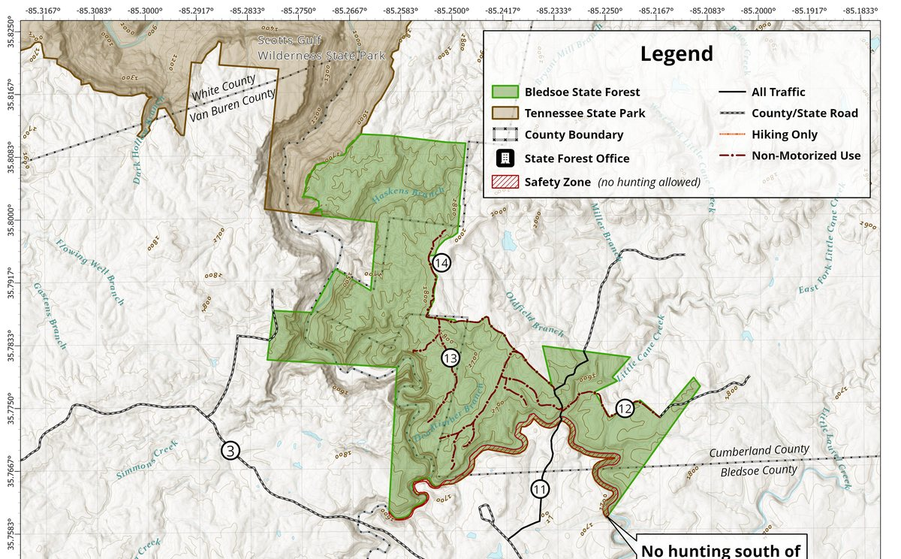
6 maps
State Forest Public Use Maps
Official public use and ecological area maps for Tennessee State Forests.
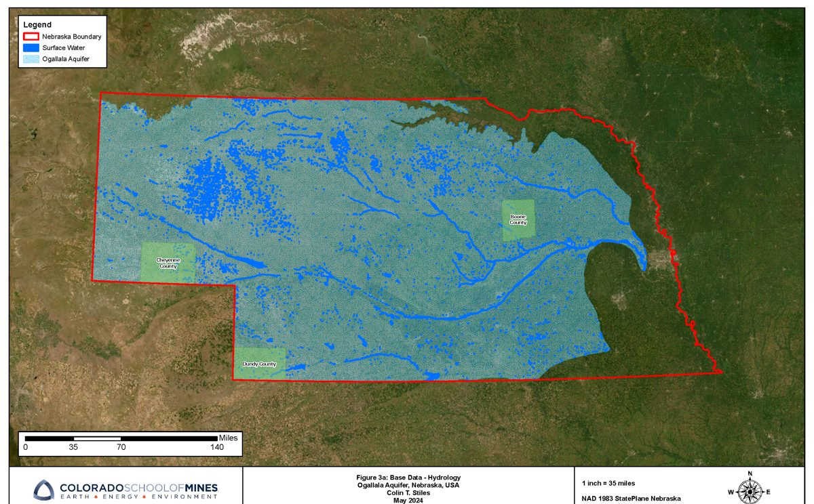
19 maps
Ogallala Aquifer Groundwater
Statewide and county-level groundwater modeling, interpolation, and change over time.
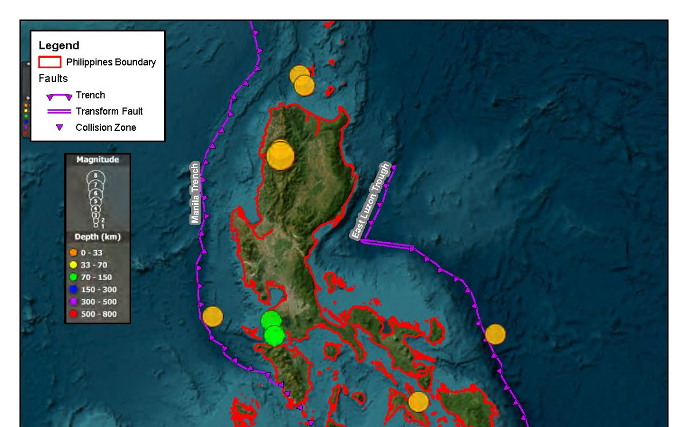
13 maps
Philippines Geohazards
Earthquake, shake intensity, and cyclone track analysis for the Philippine Islands.
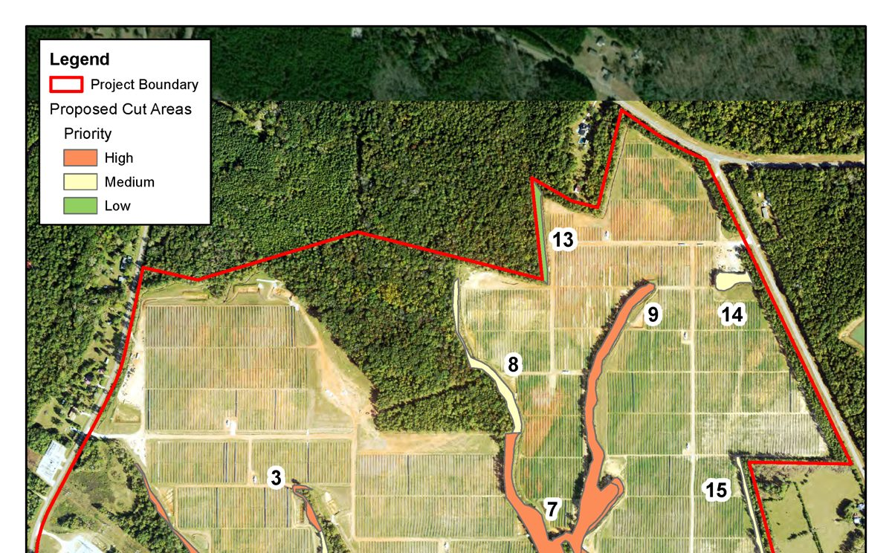
9 maps
Forestry Site Planning & Viewshed
Viewshed analysis, stream crossing impacts, and prioritized tree-trimming plans.
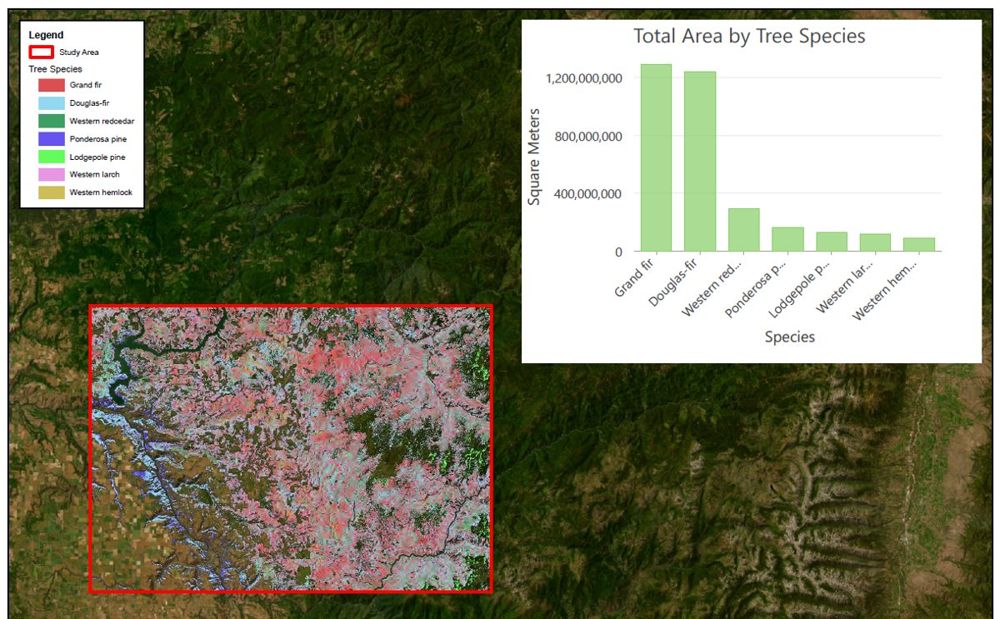
3 maps
Remote Sensing, Clearwater Idaho
Imagery-based study area, fire, and tree species mapping.
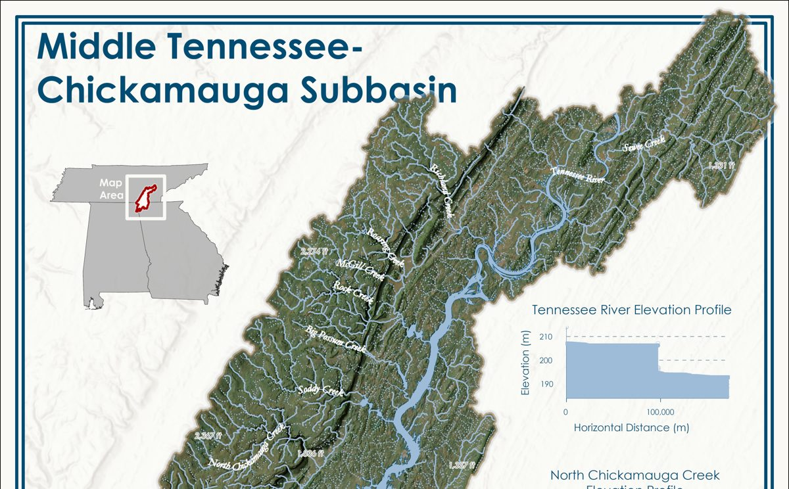
6 maps
Terrain, Hydrology & Solar
Terrain visualization, hydrologic subbasin cartography, and 3D solar shading.
Apps, dashboards & code
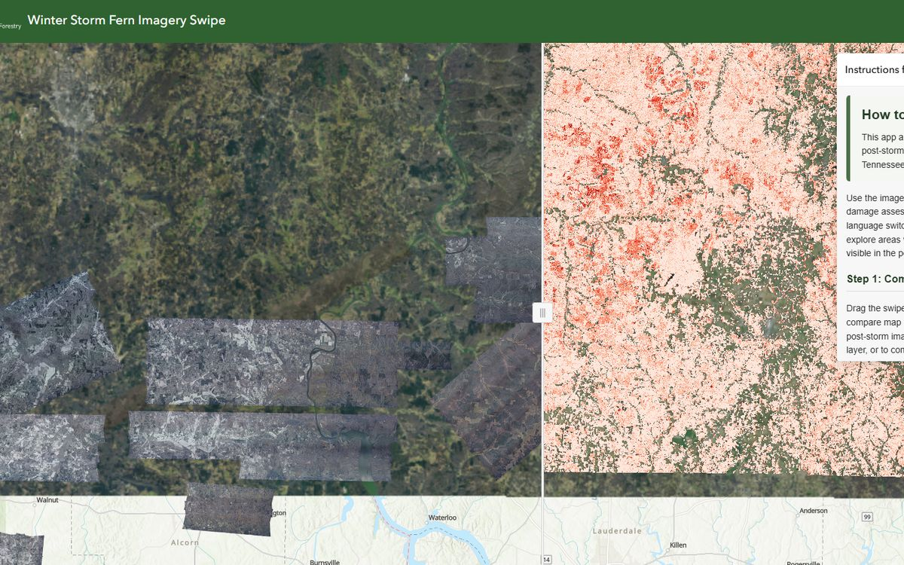
Web app
Winter Storm Fern App
A web application for visualizing and analyzing Winter Storm Fern imagery and damage assessment data.
Dashboard
Tennessee Burn Ban
Burn ban status dashboard for the State of Tennessee.
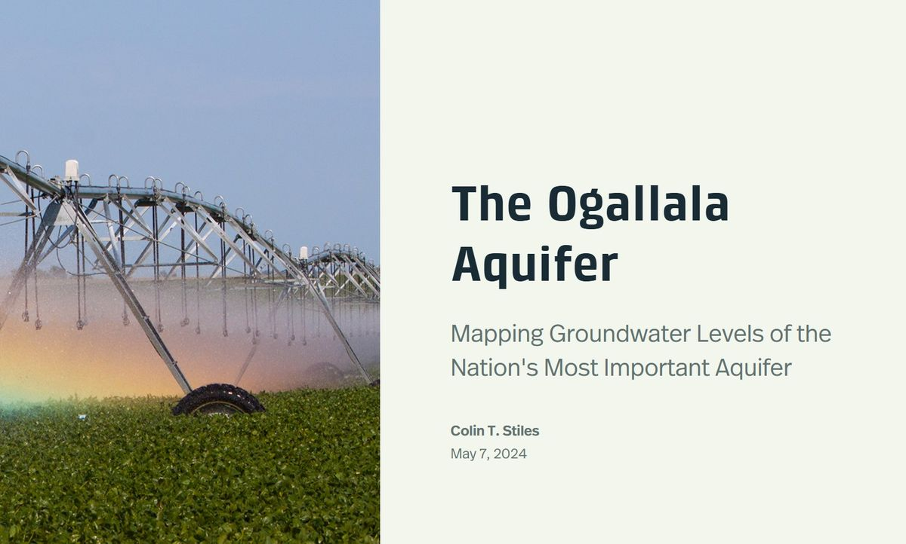
StoryMap
Ogallala Aquifer Groundwater Levels
Analyzing various interpolation methods for mapping Ogallala Aquifer groundwater levels in Nebraska.
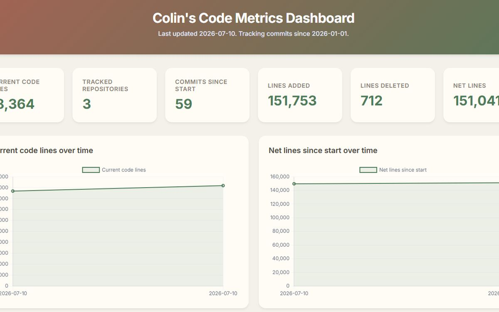
Dashboard
My Code Metrics
A dashboard for analyzing my code metrics using cloc and GitHub Actions.
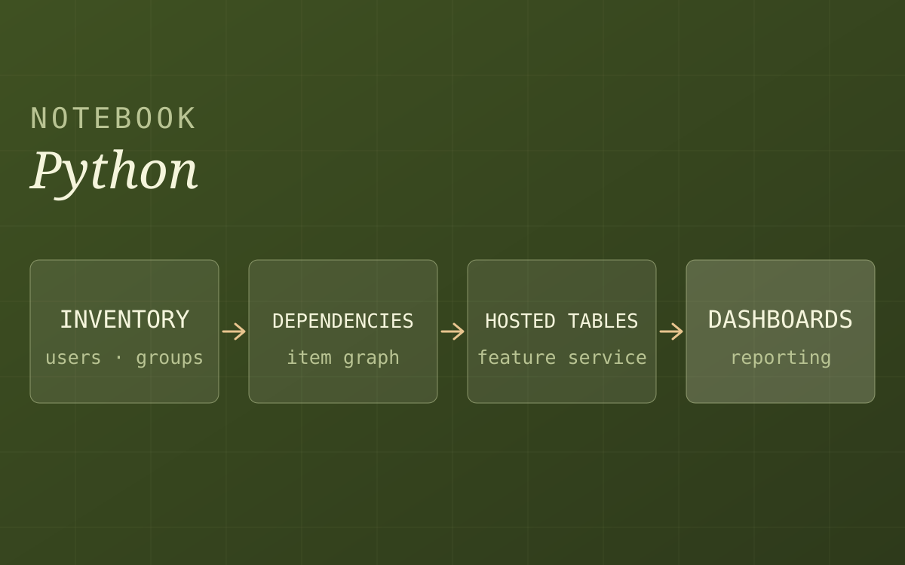
Python notebook
AGOL Admin Insights
A Python notebook to inventory an ArcGIS Online organization, analyze users, groups, and content, and publish the results for reporting.
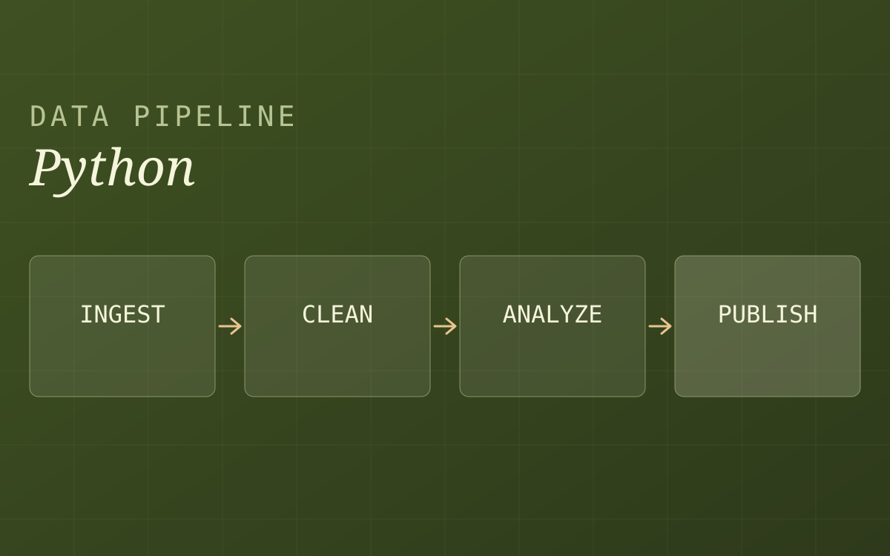
Python pipeline
Real Estate Data Pipeline
A Python pipeline to automate real estate data processing and analysis.
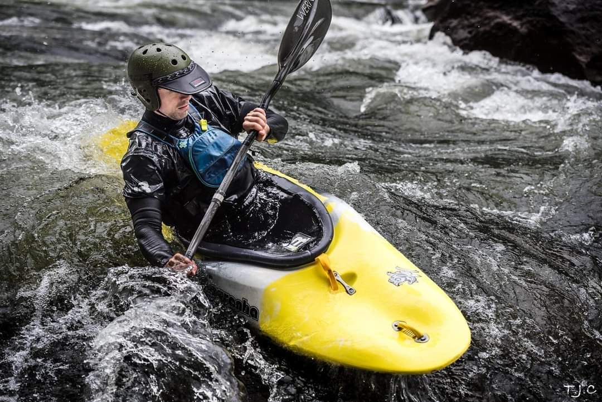
About Me.
I'm a GIS Manager and Data Scientist who turns complex spatial data into decisions people can act on. I lead the Forest Data & Analysis Unit at the Tennessee Department of Agriculture, Division of Forestry, where my team supports forest management, wildland fire response, state forest administration, and nursery operations across the state.
My career is built on reliability at scale. I've collected survey data for timber sales and environmental permits, administered enterprise GIS on a national scale, and now set statewide data standards and QA/QC for forest inventory, burn history, and land ownership.
I believe the most useful solutions come from rapid iteration, transparency, and reliability. As George Box said, "All models are wrong, but some are useful." My job is to make sure every model I build is useful, reproducible, and lean enough to adapt as goals change.
My Experience
-
Sep 2025 – Present
GIS Manager & Data Scientist
Tennessee Division of Forestry
Lead the Division's statewide GIS and data program, supervising a technical team, managing UAS and FIA, and administering ArcGIS Online and Enterprise for 300 users.
-
May 2022 – Sep 2025
GIS Lead Analyst
Kimley-Horn & Associates
Lead technical analyst for regional GIS work across engineering practices, automating analysis with Python and SQL and administering ArcGIS Enterprise.
-
Mar 2019 – Oct 2023
River Lead & Guide School Trainer
U.S. National Whitewater Center
Managed raft department operations, trained new guides, and enforced on-water safety standards.
-
May 2020 – Aug 2021
Pre-sale Forester & Wildland Firefighter
U.S. Forest Service
Surveyed tree stands with Trimble GPS, mapped timber units in ArcGIS Pro, and served on call for wildfire suppression across the Pacific Northwest.
-
Feb 2016 – Feb 2019
Infantry Team Lead (11B)
U.S. Army
Led infantry teams of up to 10 soldiers and navigated with GPS/GNSS and topographic maps.
My Education
-
2023
Master of Science in GIS & Geoinformatics
Colorado School of Mines
Graduated with a 4.0 GPA while working full-time at Kimley-Horn. Coursework included Data Science for Earth Resources I and II, Advanced Planetary GIS, and Applied Remote Sensing for Geosciences.
-
2022
Bachelor of Science in Geography
University of North Carolina at Charlotte
Graduated top of class, summa cum laude, with a 3.96 GPA. Coursework included Environmental Modeling with GIS, Fundamentals of GIS, and Regional Geography: Natural Hazards and Disasters.
-
2022
Bachelor of Arts in Environmental Studies
University of North Carolina at Charlotte
Graduated top of class, summa cum laude, with a 3.96 GPA. Coursework included Freshwater Ecosystems, Urban Ecology, and Environmental Geology.
My Affiliations
- GISP CertifiedGIS Certification InstituteGISCI
- MemberTennessee Geographic Information CouncilTNGIC
- MemberGeospatial Professional NetworkGPN
- VolunteerGISCorpsGISCorps
- MemberGIS ColoradoGISCO
- MemberNational States Geographic Information CouncilNSGIC
- MemberAmerican Society for Photogrammetry and Remote SensingASPRS
- MemberAmerican Association of GeographersAAG
Get in touch
Let's build something useful.
Questions about a project, a collaboration, or the work above? I'd like to hear about it.